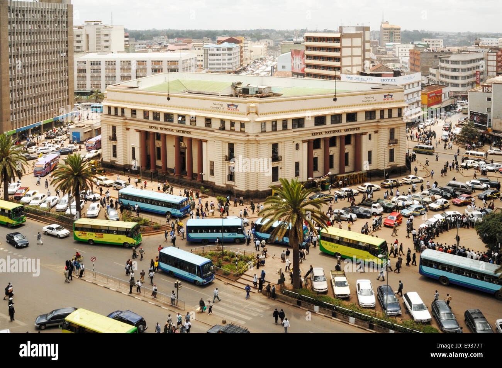

It is specifically situated at the edge of the central business district in downtown Nairobi alongMoi Avenue next to Ambassadeur Hotel

It is mainly located along lang'ata Road about 8km from the Nairobi Central Business District